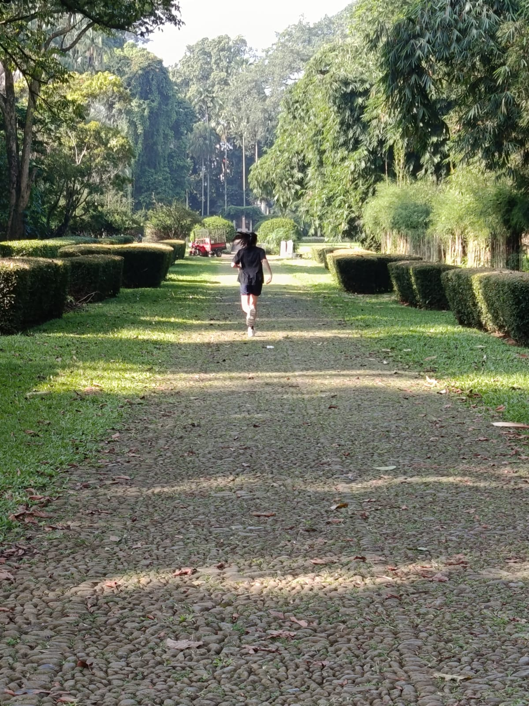

Halo, Saya Jessica Lovely !
saya adalah seorang pelajar di SMP SANTA LAURENSIA, saya adalah sesorang yang minta dalam kesenian dan filosofi saya juga sangat gemar membaca buku. saya berusia 14 tahun dan kian akan segera lulus dari SMP. saya adalah seseorang yang memiliki rasa penasaran yang tinggi. saya lahir pada tanggal 11 september 2011. saya adalah anak ke pertama di keluarga saya. sebelumnya saya berasal dari sekolah bernama penabur.
tipe kepribadian saya adalah INFP-T . saya adalah seorang yang tidak suka bergaul dengan banyak orang tapi saya selalu berusaha menunjukan yang terbaik .dalam perjalanan SMP saya, saya telah menemukan banyak pelajaran berharga dalam hidup saya. salah satunya adalah cara berdaptasi. kkarena saya adalah seorang yang susah beradaptasi, guru guru dan teman teman saya sanagt membantu saya mengisi kekurangan saya dalam berdaptasi . saya juga sangat mengidolakan seorang penyannyi bernama ed sheeran. beliau adalah penyanyi pop kesukaan saya dan ayah saya.
Profile Picture


